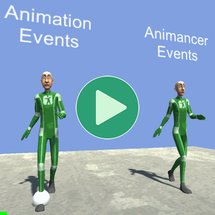
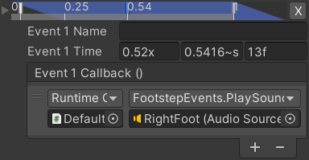
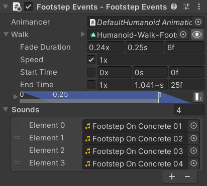
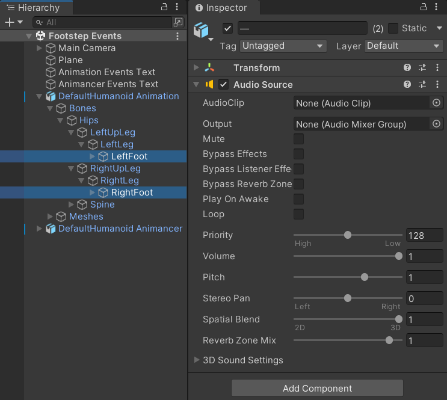
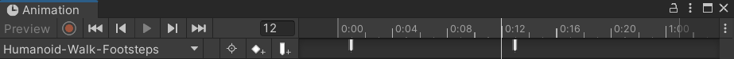
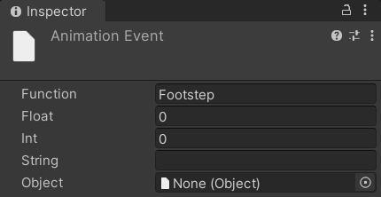
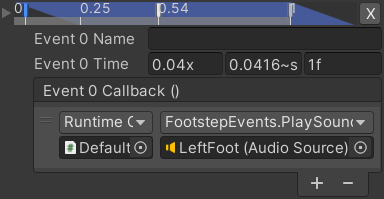

Location: Assets/Plugins/Animancer/Examples/05 Events/01 Footstep Events
Recommended After: Quick Play (it's also worth reading the Events page)
Learning Outcomes: in this example you will learn:
How to run some code at a specific time during an animation.
How to use Animancer Events.
How to use Animation Events.
This example demonstrates how you can play a randomly chosen footstep sound whenever a character's foot touches the ground during a walk cycle.
Animancer Events are a Pro-Only Feature. You can try them out in the Unity Editor with Animancer Lite, but they're not available in runtime builds unless you purchase Animancer Pro.
The actual example scene plays a sound every time a foot touches the ground. But since the video shown here doesn't have sound, it instead shows a sphere around the foot associated with each event for a short time after that event occurs.
Summary
- The Events page explains the differences between Unity's inbuilt Animation Events and Animancer Events while this example demonstrates those differences in practice.
- Animation Events are defined in an
AnimationClipand will call a method with a specific name in a component attached to the same object as theAnimatorcomponent. - Animancer Events can be defined in Transitions or in code and can be given a callback method with fewer restrictions.
Overview
There are two scripts in this example:
The base FootstepEvents script contains most of this example's logic:
using Animancer;
using UnityEngine;
public sealed class FootstepEvents : MonoBehaviour
{
[SerializeField] private AnimancerComponent _Animancer;
[SerializeField] private ClipTransition _Walk;
[SerializeField] private AudioClip[] _Sounds;
private void OnEnable()
{
_Animancer.Play(_Walk);
}
public void PlaySound(AudioSource source)
{
source.clip = _Sounds[Random.Range(0, _Sounds.Length)];
source.Play();
}
}
The Animation Events character also has the FootstepEventsAnimation script to receive its events:
using UnityEngine;
public sealed class FootstepEventsAnimation : MonoBehaviour
{
[SerializeField] private FootstepEvents _FootstepEvents;
[SerializeField] private AudioSource[] _FootSources;
private void Footstep(int foot)
{
_FootstepEvents.PlaySound(_FootSources[foot]);
}
}
The code structure used for each system is fairly similar, but their events work very differently:
| Animation Events | Animancer Events |
|---|---|
 |
 |
|
|
|  | |
Each Animation Event contains the name of the Function it wants to call and various parameters it can pass into it. When the event is triggered, Unity will find and call a method with that name in any component attached to the same object as the Animator playing the animation. |
Each Animancer Event contains a Callback which is a UnityEvent that defines what the event will do. Internally, they are actually quite similar to Animation Events (they store the name of the target method as a string and contain one of each supported parameter type), but the user interface is cleaner because they directly reference the target object so it can list all the available methods and their parameters. |
| Animation Events must always be received by a function. Unity will log a warning if there is no function with the specified name. | It's often more effective to leave the Callback blank and set it in code instead. That way the event's time can easily be previewed and tweaked by non-programmers while the actual logic is defined in code (where logic should be). The Golf Events example demonstrates how to do so. |
Playing the Animation
| Code | Inspector |
|---|---|
|
Playing the animation is basically the same as the Quick Play example except that it uses a Transition instead of a direct |
 |
Audio Sources
Sounds in Unity (AudioClips) are played by AudioSources so we need to attach one to each foot. All the default values are fine and we will be setting the AudioClip each time we play a sound.

In most games the camera won't get close enough to a regular character's feet to give any noticeable difference in the position of each sound so it's quite common to simply give each character one AudioSource. But for this example, having one per foot is a good excuse to explain how to use event parameters.
Playing the Sounds
The PlaySound method will be called by events and simply plays a random AudioClip from the array:
[SerializeField]
private AudioClip[] _Sounds;
public void PlaySound(AudioSource source)
{
source.clip = _Sounds[Random.Range(0, _Sounds.Length)];
source.Play();
}
}
- It takes an
AudioSourceas a parameter so that each foot can play its sound from a different location. - Using only a single footstep sound every time feels repetitive for players, so instead we have an array of similar ones and pick a random one each time.
- Note that the minimum value in
Random.Rangeis inclusive (so it can pick 0) while the maximum value is exclusive (so it can not pick_Sounds.Length), which is perfect for picking a random element from an array.
Animation Events
Animation Events are defined in AnimationClips which are assets, meaning they can't reference scene objects such as the AudioSources on the character's feet. So the events will need to use an Int parameter to indicate which foot they are referring to which a script will then use to determine which AudioSource to use.
This is because the asset could be loaded without the scene being loaded. Unity simply doesn't allow that to happen.
That means the Object parameter can only reference other assets which is useful in other circumstances but doesn't help us here.
Note that Animation Events don't directly interact with Animancer so this setup process is exactly the same as it would be without Animancer.
Fields
Since it's only necessary for this system (but not Animancer Events) it's better to not add anything extra to the FootstepEvents script that will be shared by both systems. So instead, FootstepEventsAnimation is a separate script which references the character's FootstepEvents script and foot AudioSources:
public sealed class FootstepEventsAnimation : MonoBehaviour
{
[SerializeField] private FootstepEvents _FootstepEvents;
[SerializeField] private AudioSource[] _FootSources;

Receiver Method
Each Animation Event has a Function Name to determine which script method it runs and optional parameters that will be passed into the method if it has them. In this case, we will be using the name Footstep and also the Int parameter to indicate which foot the event is for:
private void Footstep(int foot)
{
Then all that method needs to do is get the AudioSource for the specified foot from the array and tell the FootstepEvents script to play a sound on it:
_FootstepEvents.PlaySound(_FootSources[foot]);
}
}
Duplicate Animation
Animation Events are defined in AnimationClip assets. In a regular project you would likely want the same events everywhere a particular animation is used, but that's not the case for these examples since most of the others don't involve events (and ones that do use Animancer Events instead). So this example uses Humanoid-Walk-Footsteps which is a copy of the original Humanoid-Walk animation which was created for this example by selecting the original and using the Edit/Duplicate function (Ctrl + D).
Adding Events
The Animation Events page briefly explains how to add events to an animation and has links to the Unity Manual which explais it in more detail so we won't be repeating that here.
In this example, we have two events with their Function Name set to Footstep:

| Left Foot | Right Foot |
|---|---|
The first event on frame 1 has its Int prameter at 0 to refer to the LeftFoot (Audio Source) shown in the above image of the Inspector. |
The second event on frame 13 has its Int prameter at 1 to refer to the RightFoot (Audio Source) shown in the above image of the Inspector. |
|  |
Animancer Events
Setting up this character is simpler because the events are stored in the _Walk Transition in the FootstepEvents component. That component is in the scene so it can directly reference the foot AudioSources. The Animancer Events page explains how to set up events so all we need to do is follow that process.
| Left Footstep | Right Footstep |
|---|---|
The first event on frame 1 will pass the LeftFoot (Audio Source) into the PlaySound method. |
The second event on frame 13 will pass the RightFoot (Audio Source) into the PlaySound method. |
|  |
Conclusion
The workflow of Animancer Events is clearly superior for this particular example because they could be set up where they were needed, directly referenced the objects they interact with, and did not require a duplicate of the AnimationClip, but that will not always be the case. You may encounter situations where Animation Events are more useful so it's important to understand all the tools you have available.
What Next?
| Example | Topic |
|---|---|
| Golf Events | Demonstrates a hybrid approach to Animancer Events where you setup and tweak their times in the Inspector but leave their Callbacks blank to set them in code. |
| Uneven Ground | Uses raycasts to determine how to position the character's feet without floating or going through the ground. This example doesn't involve events, you could potentially use the same data to determine when to trigger footstep sounds as well. That would allow it to work for all animations without manually adding events to them all and could do things like calculating the desired volume based on the velocity of the foot and playing different sounds based on where each foot actually lands rather than the character's center. |
| 3D Game Kit | Uses animation curves to determine when to play footstep sounds instead of events. It also has different sounds depending on the surface the character is standing on. |